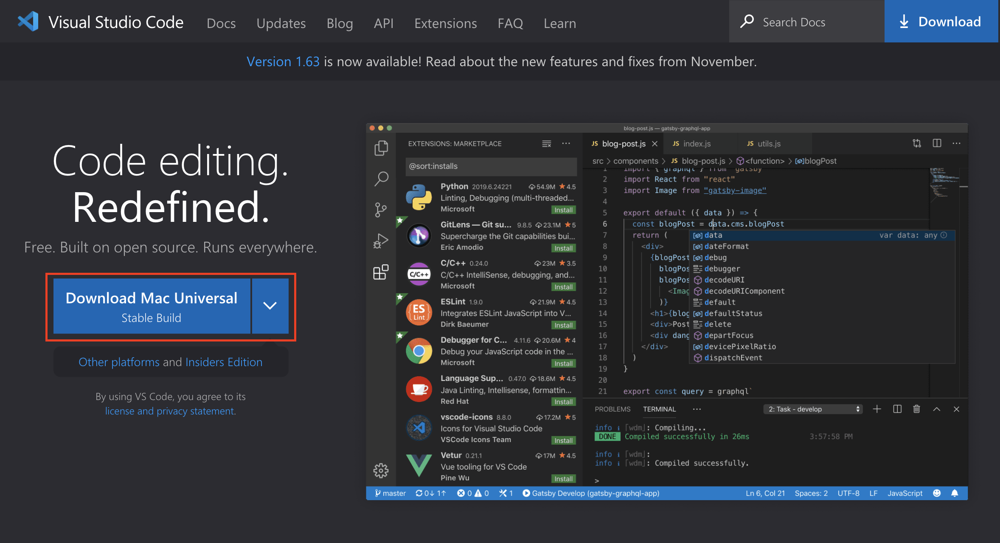
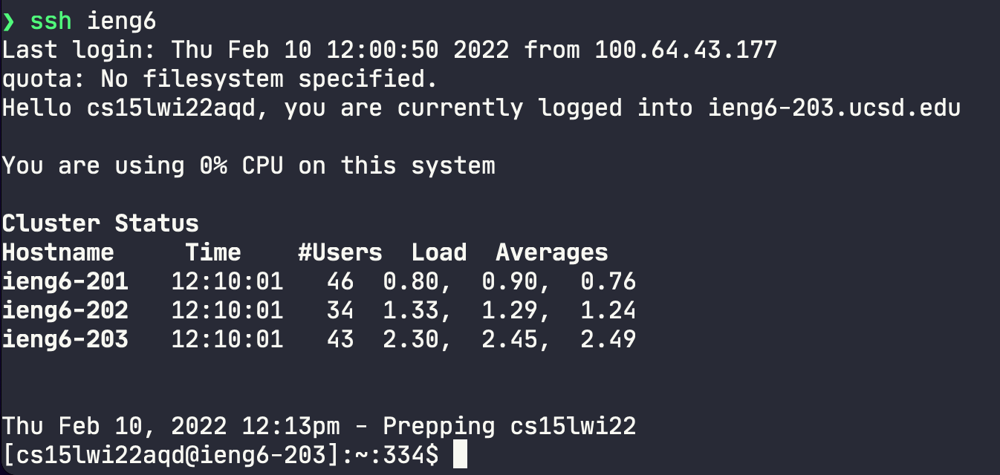
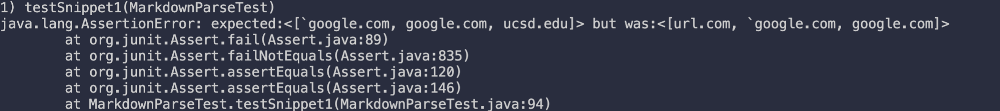
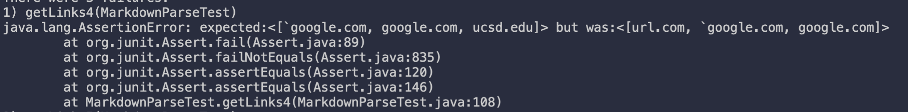
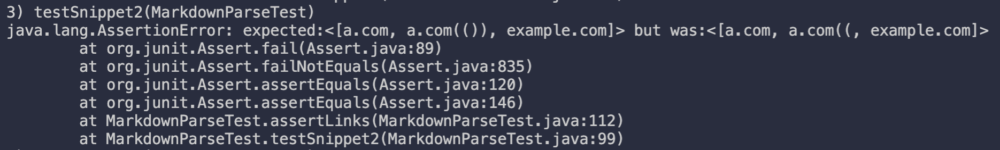
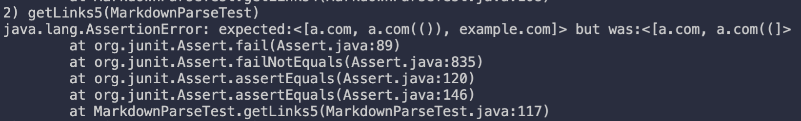
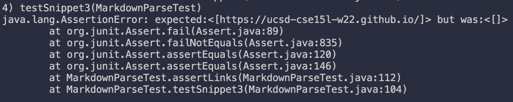
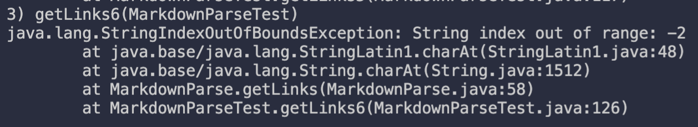

Week 2: First Lab Report
1. Installing Visual Studio Code (VSCode)
Go to code.visualstudio.com and download the corresponding installer for your OS.

The installation process is different for each OS, so I won’t be showing it here, however it should be like any other installer.
Once you have installed VSCode, open it and you should be presented with a screen like this:

You have successfully installed VSCode on your system.
2. Remotely Connecting to Your CSE 15L Account
Because you are a student of CSE 15L, you have your own account for the computers at UCSD and we are going to connect to those computers remotely.
If this is your first time using the ETS resources (if you don’t know what that means, this will probably be your first time), you must reset your UCSD password. Go to sdacs.ucsd.edu/~icc/index.php, and under “Forgot Username or New Student?”, input your last name, student id, and hit “Submit”.

It should prompt you to input a new password. After you do so, you have successfully reset your UCSD password.
Now that you have have your account setup, you need to find your course-specific account for CSE15L. Go back to sdacs.ucsd.edu/~icc/index.php, and this time, input your information in “Account Lookup.” Once you have done, you should be presented with a screen like the following:

You will have a CSE 15L account ID that starts with cs15lwi22. The last few characters are specific to your account. Copy the account ID (including the last characters that are specific to you).
Now, we’re going to connect to the account using SSH.
If you are running Windows, you must install OpenSSH to use SSH.
Go back to VSCode and open the terminal by going to Terminal→New Terminal in the menu or by pressing Ctrl or Command + ` (this is the backtick key which is the key right below the Esc key). Once you have that open, you should be presented with a terminal

(Don’t worry if yours doesn’t look exactly like mine. As long as have you a terminal looking thingy, you are fine)
Now in the terminal, you are going to type the following:
$ ssh <account ID here>@ieng6.ucsd.edu
where <account ID here> is your account ID that you’ll paste from early. For example, let’s say you’re account id was cs15lwi22xyz, then you’ll type:
$ ssh cs15lwi22xyz@ieng6.ucsd.edu
(Note: don’t include the $ character at the beginning. This is used to differentiate input to the terminal and output from the terminal which you’ll see in a minute).
The first time you connect, you will get a message to do with "authenticity of host ... can't be established.” We’re going to just type yes and enter. (The details on why this comes up are long and complicated and can be found here.) After you type yes and enter, you will be prompted to type in your password. Type in the password you set early when you reset your password. After this is done, a whole bunch of information should will be displayed to you. Overall, it should look something like this:
$ ssh cs15lwi22xyz@ieng6.ucsd.edu
The authenticity of host 'ieng6.ucsd.edu (128.54.70.238)' can't be established.
RSA key fingerprint is SHA256:ksruYwhnYH+sySHnHAtLUHngrPEyZTDl/1x99wUQcec.
This key is not known by any other names
Are you sure you want to continue connecting (yes/no/[fingerprint])? yes
Warning: Permanently added 'ieng6.ucsd.edu' (RSA) to the list of known hosts.
(cs15lwi22xyz@ieng6.ucsd.edu) Password:
Last login: Mon Jan 10 16:26:59 2022 from ip68-101-116-221.oc.oc.cox.net
quota: No filesystem specified.
Hello cs15lwi22xyz, you are currently logged into ieng6-203.ucsd.edu
You are using 0% CPU on this system
Cluster Status
Hostname Time #Users Load Averages
ieng6-201 16:25:01 14 0.12, 0.23, 0.19
ieng6-202 16:25:01 11 4.10, 4.16, 3.99
ieng6-203 16:25:01 12 0.16, 0.26, 0.22
Mon Jan 10, 2022 4:29pm - Prepping cs15lwi22
[cs15lwi22xyz@ieng6-203]:~:1$
Now, you have successfully connected to a UCSD computer through SSH 🎉. Any command you type in will now run on the UCSD computer.
3. Run Some Commands
Now, try running some commands. Theses are some funs ones:
lsls -alpwdfactor 24cd <directory>where<directory>is the folder on the host systemmkdir <directory>cat <file>
To logout of the UCSD computer, you can run: exit.
Example of some file navigation: 
4. Copying Files to the Host
Hopefully, you have run some commands and know what some of them do. However, we still have no idea how to copy files from the client (your machine) to the host (UCSD computer). To do this, there is a command called scp (secure copy). This command will allow you to copy files from the your computer to the host, and must be ran on the client (not the host). So if you haven’t already, logout of the UCSD computer. Create a file named stuff.txt with the following content:
this is indeed stuff
Now, go back to the terminal and make sure you’re in the same directory as stuff.txt (you can see what directory you’re in with pwd and you can change directory with cd). Once you are in the same directory as stuff.txt, type the following command to copy it to the host:
$ scp stuff.txt cs15lwi22xyz@ieng6.ucsd.edu:~/
Enter your password like before, and you should have successful copied it over. Now, try going back to the host machine with the ssh command like before. Enter:
$ cat stuff.txt
You should see this is indeed stuff 🎉.
Example of the whole process: 
5. Making the Host Trust Us with SSH Keys
I’m sure you’re already tried of typing in your password. Now, imagine if you’re doing this everyday for work and a school project. What we’re going to do is make the host machine trust this client machine, so we don’t have to type in our password only more. On the client machine, type the following:
$ ssh-keygen
Generating public/private rsa key pair.
Enter file in which to save the key (/Users/dude123/.ssh/id_rsa): /Users/dude123/.ssh/id_rsa
Enter passphrase (empty for no passphrase):
Enter same passphrase again:
Your identification has been saved in /Users/dude123/.ssh/id_rsa.
Your public key has been saved in /Users/dude123/.ssh/id_rsa.pub.
The key fingerprint is:
SHA256:jZaZH6fI8E2I1D35hnvGeBePQ4ELOf2Ge+G0XknoXp0 dude123@dude123-machine
The key's randomart image is:
+---[RSA 3072]----+
| |
| . . + . |
| . . B o . |
| . . B * +.. |
| o S = *.B. |
| = = O.*.*+|
| + * *.BE+|
| +.+.o |
| .. |
+----[SHA256]-----+
When it asks you for a passphrase, just hit enter. We don’t want a passphrase. Next, we have to create a folder on the host machine. If we’re just running one command on the host machine, we can add it to the end of our ssh command, and it will run that instead of putting us into the host machine. So, on the client, run:
$ ssh cs15lwi22zz@ieng6.ucsd.edu "mkdir .ssh"
<Enter password>
Now that we’ve created our ssh keys and made a directory on the host, we want to copy the public ssh key from our client machine to that new directory on the host system. If only there was a way to do this? We want to use our good pal, scp. To do so, we may run the following command on the client:
$ scp ~/.ssh/id_rsa.pub cs15lwi22xyz@ieng6.ucsd.edu:~/.ssh/authorized_keys
<Enter password>
Now, try again to use the ssh command to get login to the host machine. You shouldn’t have to use your password!
With this, it should be as simple as: 
6. Getting Clever with SSH
Suppose you are working a Java project, and you have to constantly edit the Java file on your machine, copy it over to the host, compile it on the host, and finally run it on the host. We can make this process super quick with the power of the command line with the following command:
$ scp JavaFile.java cs15lwi22xyz@ieng6.ucsd.edu:~/ && ssh cs15lwi22xyz@ieng6.ucsd.edu "javac JavaFile.java && java JavaFile"
With one command, we can copy the file, compile the file, and run the file.
Exmaple of the whole process: 
Week 4: Second Lab Report
First Case
Diff

Failure-inducing Input
https://github.com/ocboogie/markdown-parse/blob/main/testCases/endStartParentheses.md
)[
Symptom

Explanation
The problem was opening a square bracket without ending it. After finding an open bracket, we search for the closing bracket. However when doing so, we check to see if the character preceding it is a back slash (this is done to ensure it is not an escaped bracket). Since there is no closing bracket, indexOf will return -1, subtracting 1 gives us -2. We then find the character at that index resulting in an index of range error.
Second Case
Diff


Failure-inducing Input
[a] link!](https://something.com)
Symptom
An Infinite loop

Explanation
The condition for the while loop is currentIndex < markdown.length(), so an Infinite loop indicates that this condition remains true. Of course, markdown.length() is staying the same, so the corporate is currentIndex. The last search for a closing parentheses results in a -1, so when we update currentIndex, it gets incorrectly assigned 0. An easy fix is to break if there are no more (.
Third case
Diff

Failure-inducing Input
# Title
[fake link]extra space here(not a real link)
[a] link!](https://something.com)
[a link!](https://otherlink.com)
Symptom
Incorrectly labeling [fake link]extra space here(not a real link) as a link. Since this is an incorrectly formatted MarkDown link (by there being characters between ] and (), we don’t want to include it in our output.

Explanation
This one is different from the last two cases where it was obvious that something was wrong (i.e. throwing an exception or being stuck in an infinite loop). Nothing seems wrong here, but by the CommonMark (a formal specification of Markdown) specification (example 510), a valid link must not have characters between ] and (. So, we are not following specification if we include not a real link as a link. To fix this, we can just check if ] directly proceeds ( and only include the link if it does.
Week 6: Third Lab Report
Host *
AddKeysToAgent yes
UseKeychain yes
IdentityFile ~/.ssh/id_rsa
Host ieng6
HostName ieng6.ucsd.edu
User cs15lwi22aqd
I copied the code from the lab report. I opened the ~/.ssh/config file with vim. I, then pasted the code into the file, but after the existing entry. After saving that, I should be able to use ieng6 to shh into the computer.

This is a lot more simple than having to haul around the other link. The other link was large, and, of course, I don’t remember it, so I either have to keep going back in my bash history or copy it from somewhere. This, however, I can easily just type it out.

Again, this makes things just overall more simple. Although it’s not that big of change, it just makes the whole process easier. I don’t have to remember the whole link or copy it from somewhere.
Week 8: Fourth Lab Report
Our Repo
Review Repo
Snippet 1
`[a link`](url.com)
[another link](`google.com)`
[`cod[e`](google.com)
[`code]`](ucsd.edu)
Correct Ouput
According to the commonmark spec, there should be three links: "`google.com", "google.com" and "ucsd.edu".
Added Test
To add the test, I copied the contents of snippet 1 into our testCase under
the name snippet1. With the help of our helper function assertLinks, I
can simply add a test with the following code:
@Test
public void testSnippet1() throws IOException {
assertLinks(List.of("`google.com", "google.com", "ucsd.edu"), "testCases/snippet1.md");
}
For the review repo, they already had the tests there, so I didn't need to add them.
Our Repo Test Output

Review Repo Test Output

Fix
This one would be difficult to fix and probably require a full "understanding"
of inline code in markdown. What I mean by "understand" is not in the human
sense, but in the program sense (e.g. make the program understand how inline
code works in Markdown). This would require a more involved approach to parsing
other than just using findIndex.
Snippet 2
[a [nested link](a.com)](b.com)
[a nested parenthesized url](<a.com(())>)
[some escaped \[ brackets \]](example.com)
Correct Ouput
According to the commonmark spec, there should be three links: "a.com", "a.com(())", "example.com".
Added Test
Similar to snippet 1, I added the following code:
@Test
public void testSnippet2() throws IOException {
assertLinks(List.of("a.com", "a.com(())", "example.com"), "testCases/snippet2.md");
}
Our Repo Test Output

Review Repo Test Output

Fix
Although we can fix with less than 10 lines of code, there is a good chance it would break something else. To have a "good" working version, we would need a more sophisticated approach. Perhaps, a stack to parse to links.
Snippet 3
[this title text is really long and takes up more than
one line
and has some line breaks](
https://www.twitter.com
)
[this title text is really long and takes up more than
one line](https://ucsd-cse15l-w22.github.io/)
[this link doesn't have a closing parenthesis](github.com
And there's still some more text after that.
[this link doesn't have a closing parenthesis for a while](https://cse.ucsd.edu/
)
And then there's more text
Correct Ouput
According to the commonmark spec, there should be one link: "https://ucsd-cse15l-w22.github.io/"
Added Test
Similar to snippet 1 and 2, I added the following code:
@Test
public void testSnippet3() throws IOException {
assertLinks(List.of("https://ucsd-cse15l-w22.github.io/"), "testCases/snippet3.md");
}
Our Repo Test Output

Review Repo Test Output

Fix
Although this one wouldn't be clean of a fix, this is probably the easist fix. We would have to do some checking of the next newline and such. However, this could quickly grow into unmaintainability. So although it probably could be done with less than 10 lines of code, it wouldn't be pretty and could break other cases.
Week 10: Fifth Lab Report
Finding the difference
First I saved the output of our implementation with the following command
bash script.sh > results-our.txt
Then in the review implementation, I did the same thing
bash script.sh > results-joe.txt
I moved the files into the same directory and then ran
diff results-our.txt results-joe.txt
Resulting the output,
212c212
< [url]
---
> []
230c230
< [baz]
---
> []
270c270
< []
---
> [/bar\* "ti\*tle"]
...
First test (577.md)
Test Case

Our implementation output []. Whereas, the example implemenation output [train.jpg]. In this case, the correct output would be ours, because we are not supposed to include images as links.
Bug
The example implementation doesn't check if the character before [ is !. If it is, then it is not a link, therefore should not be included in the output.
// ...
int nextOpenBracket = markdown.indexOf("[", currentIndex);
// ...
Second Test (481.md)
Test Case
[link](/uri "title")
Our implementation output ['/uri "title"']. Whereas, the example implemenation output []. In this case, both implementations are wrong. According the CommonMark spec, links are allowed to have titles, which is the part in quotes. However, this is not part of the link. So therefore, the correct output would be ["/url"].
Bug
For our implementation, we would have to do some sort of parsing of titles and links. For example, we could split by spaces and take the first. (There is no specific code that is the problem, so I am not going to include the code snippet for our implementation)
For the example implementation, it is checking if there is a space in the link block. If there is, then don't include the link. Although, we still want to include the link if there is a space between the link and the title.
// ...
String potentialLink = markdown.substring(openParen + 1, closeParen).trim();
if (potentialLink.indexOf(" ") == -1 && potentialLink.indexOf("\n") == -1) {
toReturn.add(potentialLink);
currentIndex = closeParen + 1;
} else {
currentIndex = currentIndex + 1;
}
// ...